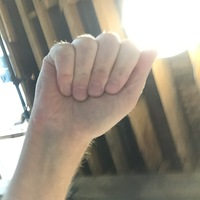
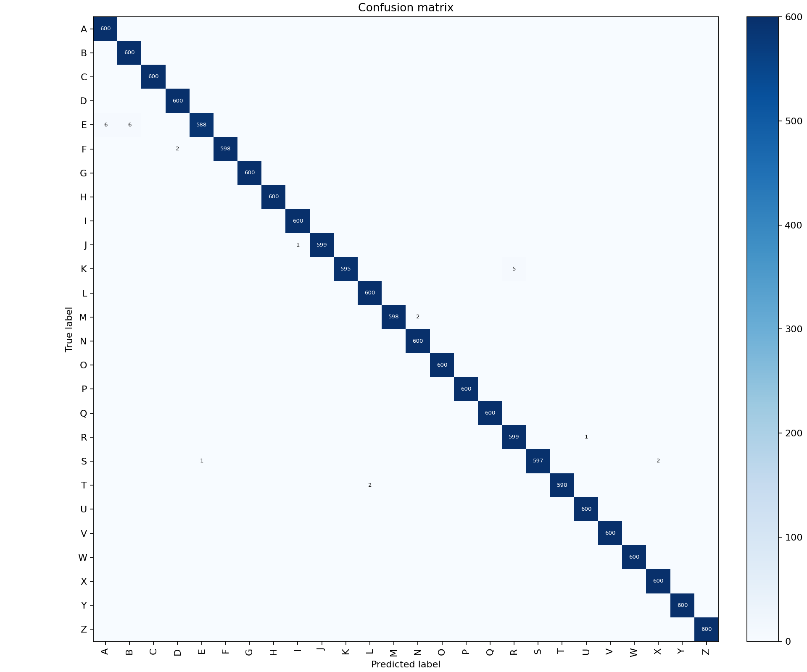
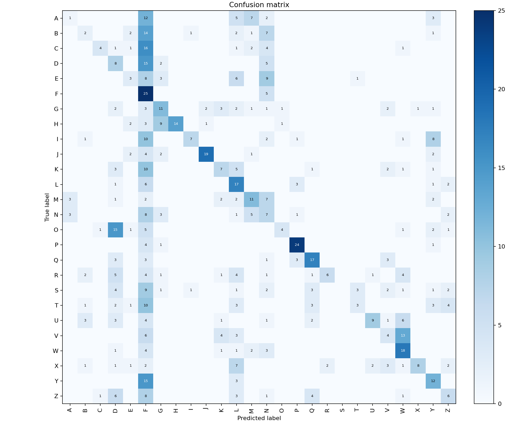

Macro F1 98.93% · same controlled corpus
ASL ALPHABET / 64 × 64 / LOCAL BROWSER INFERENCE
Inspect the image.
Inspect the result.
A compact CNN for isolated A–Z ASL images. Use a camera, upload a still image, or challenge it with a held-out capture—then keep the evaluation evidence in view.
Open the labLIVE CLASSIFIER
Frame one hand. Test the checkpoint.
All image processing and CNN inference run on-device after the 661 KB weight file loads.
InputExternal challenge sample · true label A

Camera frames stay in this browser. Auto-frame loads a free MediaPipe hand-landmark model on demand; it does not send video to a server.
PredictionLoading model…
—
Waiting for weights
The released checkpoint is loading.
EVALUATION, ON THE PAGE
The number that matters is 31.67%.
The released model separates cleanly from its claims: a strong same-source score and poor transfer to a separate capture source. A robustness experiment nearly doubled the external score; two of every three external images are still wrong.
Macro F1 31.74% · separate capture source · up from 17.56%
Down from 82.26 pp, still strong capture dependence
64 × 64 RGB · 12 CPU epochs · seed 42 · robust_noflip


Evaluation contract. Train/validation/test exact byte overlaps were zero. The 15,600-image source test was untouched; the 780-image CC0 external set was never used in training or model selection.
Historical context. A previous notebook reports 94.27% on an image-level holdout from the primary corpus; it is not comparable to independent external accuracy.
How the external score improved. Training augmentation was changed; architecture, image size, seed, optimizer, and inference preprocessing were not. Candidates were ranked on a frozen corruption benchmark built only from source validation images, and the external set was scored once, after selection was fixed.
WHAT THE CNN SEES
Real layer responses, not decorative AI art.
Feature maps from the released CNN for the default external A sample. Brighter regions are stronger channel activations; channels are independently scaled for visibility.
01 Input
64 × 64 RGB02 Block 1
24 channels · 32 × 3203 Block 2
48 channels · 16 × 1604 Block 3
96 channels · 8 × 8
64 × 64 RGB02 Block 1
24 channels · 32 × 3203 Block 2
48 channels · 16 × 1604 Block 3
96 channels · 8 × 8